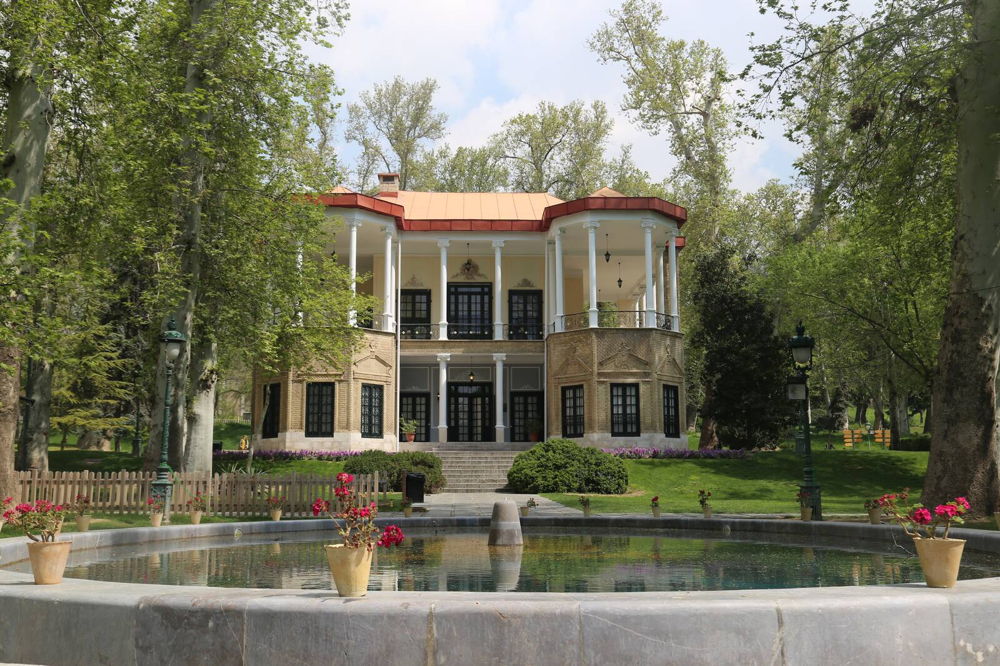
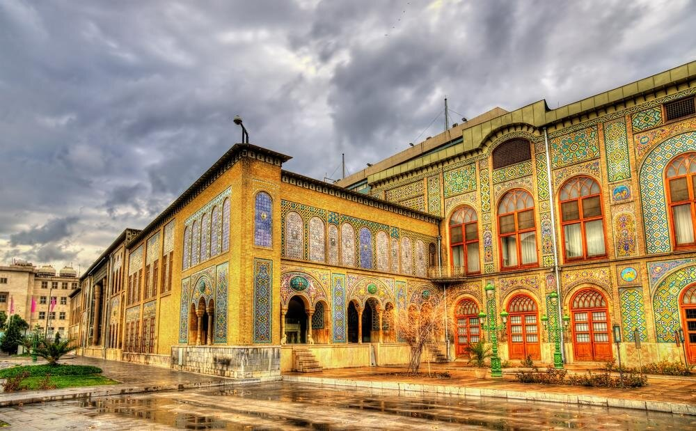
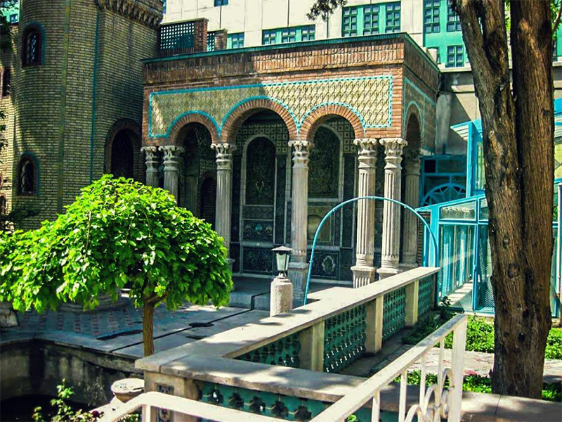
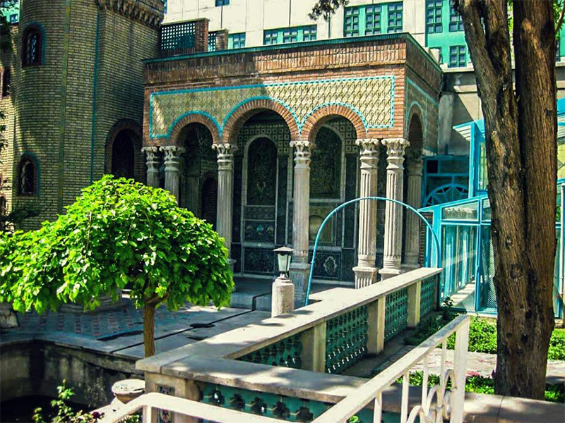
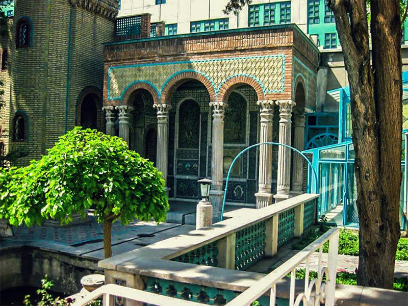

Tehran,City of Modern era Museums
Tehran, as one of the main tourist destinations in Iran, has a wealth of cultural attractions. It is home to royal complexes of Golestan, Saadabad and Niavaran, which were built under the reign of the country's last two monarchies.
Notable Museums and Sights
- Golestan Palace
- Niavaran Complex
- Tehran Grand Bazaar
- National museum of Iran
- Moghadam Musuem
Gallery


 



